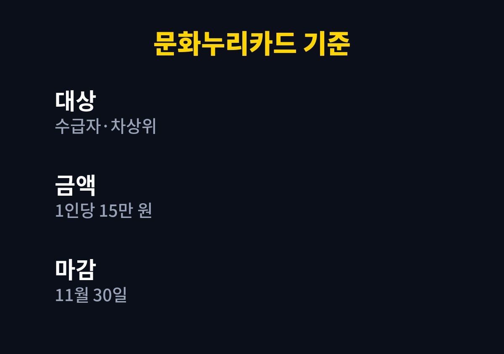
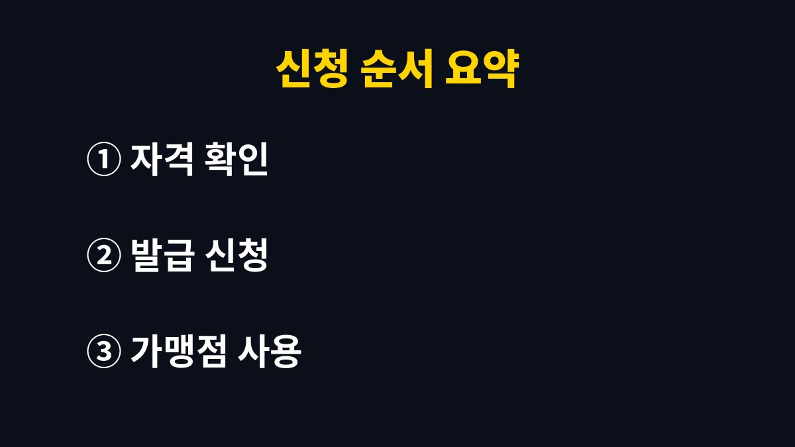

문화누리카드는 올해 발급 기간이 11월 30일 월요일까지이고, 1인당 지원금은 15만 원이다.
청소년 등 일부 연령에는 1만 원이 더 얹혀 최대 16만 원으로 안내된다.
마감까지 보름도 남지 않아, 대상 여부와 신청 경로를 지금 가려 두는 편이 빠르다.
문화누리카드는 소득이 낮은 사람의 문화 생활을 돕는 제도라 대상이 정해져 있다.
기초생활수급자와 차상위계층이 중심이고, 이 자격이 확인되어야 발급된다.
주변에서 받았다는 말만 듣고 주민센터에 갔다가 자격이 안 맞아 돌아오는 경우가 생길 수 있다.
대상 여부가 헷갈리면 복지로의 모의계산이나 주민센터 상담으로 먼저 묻는 것이 낫다.
카드에 담긴 금액은 문화·여행·체육 분야 가맹점에서만 결제된다.
현금으로 바꾸거나 남에게 넘기는 일은 할 수 없다.
가맹점으로 등록되지 않은 곳에서는 업종이 비슷해 보여도 결제가 거절된다.
지원금은 해마다 새로 정해지고 해마다 자격을 다시 따진다.
작년에 받았다고 올해 자동으로 이어진다고 단정하면 안 된다.
올해 자격이 유지되는지는 공식 안내와 잔액 조회로 확인해야 한다.
금액과 기간은 문화체육관광부 보도자료와 문화누리 누리집 공지에서 확인한 내용만 적었다.
표에 없는 세부 연령 구간이나 예산 소진 시점은 공식 공고를 따로 봐야 한다.
| 항목 | 내용 | 확인할 곳 |
|---|---|---|
| 지원 대상 | 기초생활수급자·차상위계층 등 | 주민센터·문화누리 누리집 |
| 지원 금액 | 1인당 15만 원 | 문화체육관광부 보도자료 |
| 추가 지원 | 청소년 등 일부 연령 1만 원 추가, 최대 16만 원 | 문화누리 누리집 공지 |
| 발급 기간 | 2월 2일부터 11월 30일까지 | 문화누리 누리집 공지 |

추가 1만 원을 받는 연령 구간은 출생연도로 갈리기 때문에, 내가 해당하는지는 직접 대조해야 한다.
예를 들어 가족 세 명이 각자 카드를 받는 집이라면 사람마다 금액이 다를 수 있다.

11월 30일은 월요일이라 주말에 몰린 신청이 월요일 오전에 한꺼번에 들어올 수 있다.
주민센터는 업무 시간에만 열리므로 마지막 날에 처음 가면 접수 시간이 부족할 위험이 있다.
카드가 있다고 어디서나 되는 것은 아니다.
동네 서점이나 공연장이 가맹점인지는 가보기 전에 검색으로 확인해야 하며, 같은 업종 안에서도 결제가 안 되는 품목이 있을 수 있다.
사용 기한과 남은 금액이 다음 해로 넘어가는지는 발급 안내문과 누리집 공지에서 직접 확인한다.
잔액이 남았는데 기한이 지나 쓰지 못하는 일은 연말이 가까울수록 늘어난다.
결제를 취소하면 승인 처리까지 시간이 걸릴 수 있어, 환불이 걸린 금액은 기한과 겹치지 않는지 따로 본다.
공연이나 숙박을 미리 예약했다가 일정이 바뀌면 취소 시점에 따라 쓸 수 있는 금액이 달라질 수 있다.
지금 할 일은 하나다.
내가 대상인지 주민센터나 복지로에서 오늘 확인하고, 해당된다면 11월 30일 전에 발급 경로를 정한다.
자격이 애매하면 관할 주민센터 담당자에게 전화로 묻는 편이 가장 빠르다.
참고 자료: 문화체육관광부 보도자료 「2026년 문화누리카드 15만 원 지원, 2월 2일부터 발급」(2026년 11월 확인) · 문화누리 누리집 「2026년 문화누리카드 발급방법 안내」(2026년 11월 확인) · 정책브리핑 「올해 문화누리카드 15만 원 지원…청소년 등엔 1만 원 더」(2026년 11월 확인)
※ 2026년 11월 기준 공개된 정보를 정리한 글이며, 정확한 대상 요건·금액·신청 기간은 복지로·정부24·관할 주민센터의 공식 공고를 확인하길 바란다.